Introduction
A final year game project made by 6 members, about a young city kid's travels to encounter various cultures while solving puzzles to bridge on different islands in a 2D / 3D environment.
Was tasked as one of the technical artists for both user interfaces and 3D graphics.
This game has been published in itch.io.
Platform
Windows
Engine
Unity3D
Genre
Narrative, Puzzle
Duration
September 2022 - May 2023
Achievements
Level Up KL 2023 SEA Game Awards
My Assigned Tasks
- Created various particle effects to bring out the liveliness of each island and the main menu.
- Motion graphics on all user interfaces.
- A swaying movement for all islands to look more alive and realistic, as all islands are floating above the surface. But instead of using the built-in animator, a script is written for better optimization.
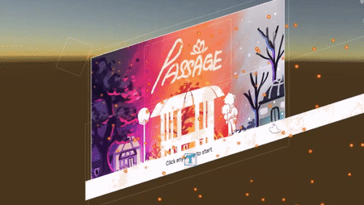
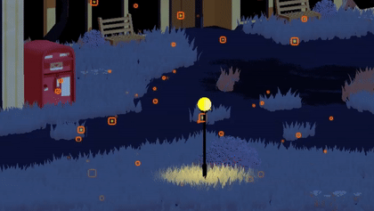
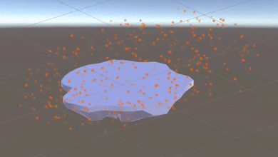
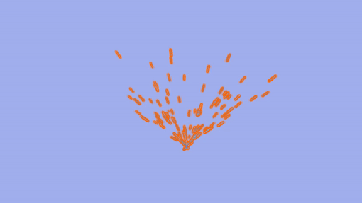
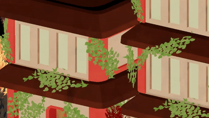
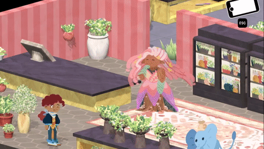


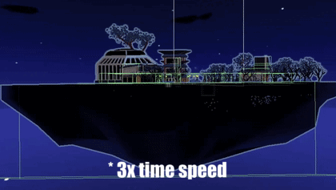
void Update()
{
Quaternion rotate = startPos;
rotate.x += direction * (delta * Mathf.Sin(Time.time * speed));
// The delta represents the height of the arc to move
// Because the sin() function has a smoother and consistant wavelength, this is used to represent the movement of an island swaying
transform.rotation = rotate;
} 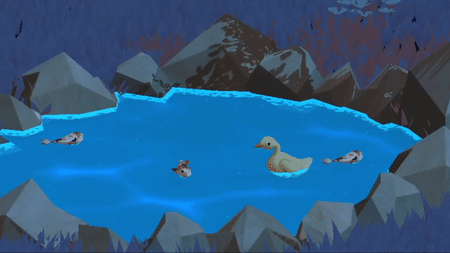
Transform corners = idleSpots[currentPos];
if (Vector3.Distance(transform.position, corners.position) < 0.01f)
{
transform.position = corners.position;
waitCounter = 0f; // Resetting the counter to start over
waiting = true;
currentPos = (currentPos + 1) % idleSpots.Length;
}
else
{
transform.position = Vector3.MoveTowards(transform.position, corners.position, swimSpeed * Time.deltaTime);
// This is to make sure that all animals are facing towards the assigned patrolling areas
transform.LookAt(corners.position);
transform.rotation *= Quaternion.FromToRotation(Vector3.right, Vector3.forward);
} - Overall shader.
- Water shader.
- Crystallized shader.
- Silhouette shader whenever the player is behind an object, using Unity URP's depth testing.
- To fit the overall aesthetic of this game, I adapted a shader from a known game artist, minionsart with a few adjustments and additional nodes.
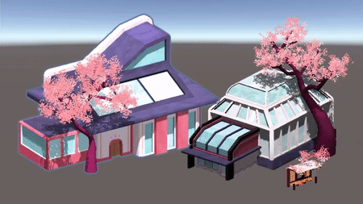
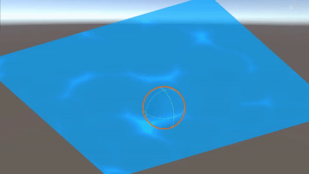
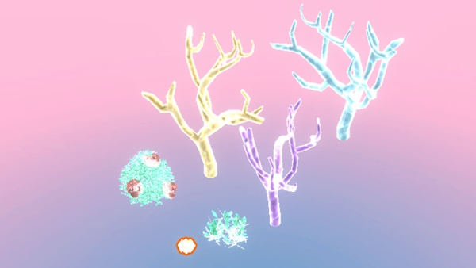

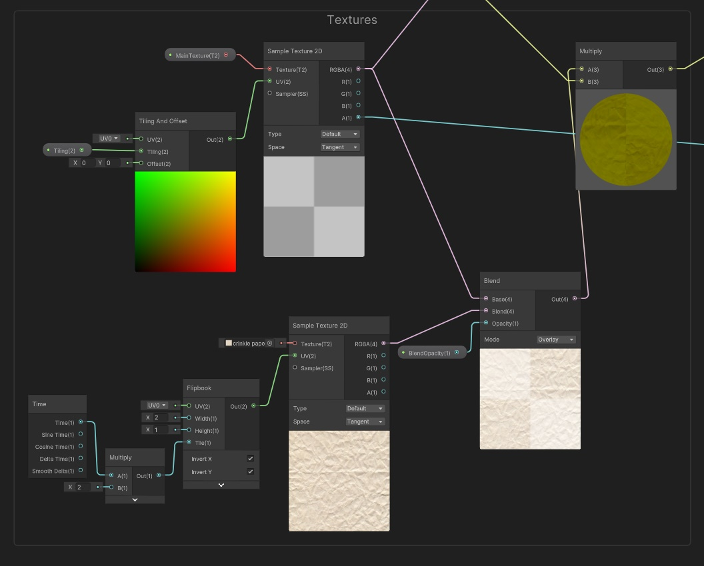 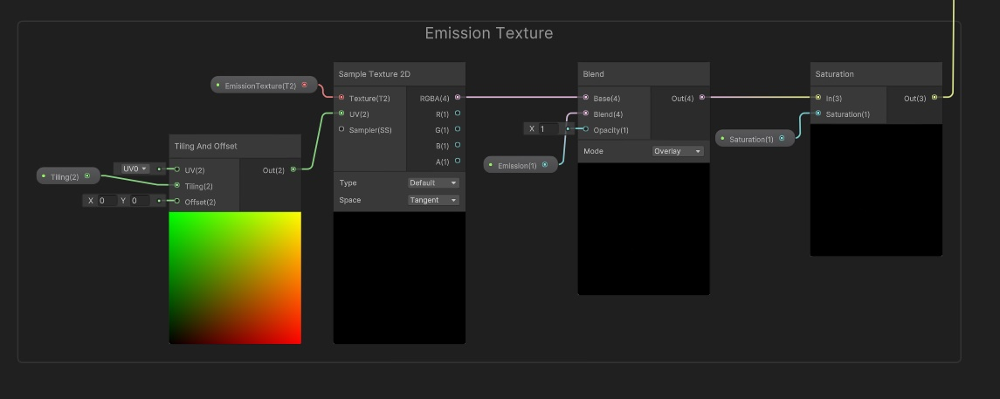 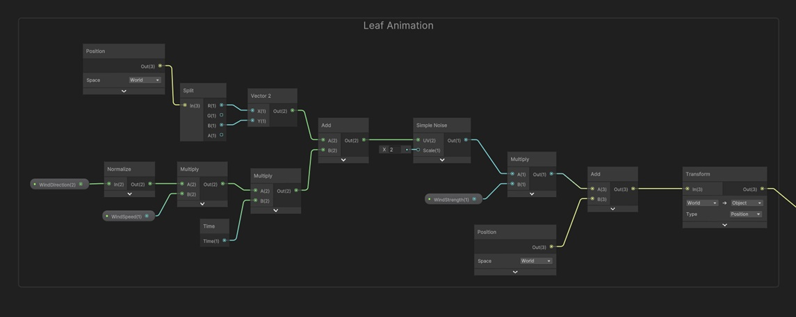